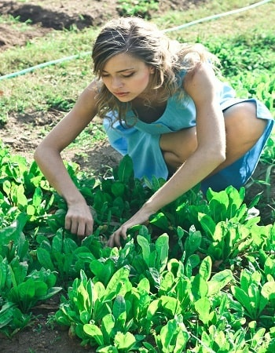
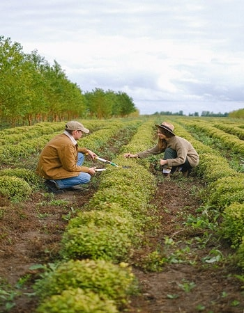
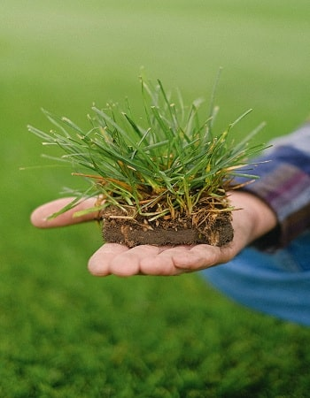

AGRICULTURE FARMING
Implementing sustainable farming practices that improve crop yield and soil health.
Our methods include organic farming, crop rotation, and the use of natural fertilizers.

SYSTEMS REFORMS
Reforming agricultural systems by integrating modern technology such as IoT and
data analytics to enhance productivity and efficiency in farming operations.

ORGANIC SOLUTIONS
Providing organic solutions that promote environmental sustainability and human
health. Our products are free from synthetic pesticides and fertilizers, ensuring the best quality for
consumers.